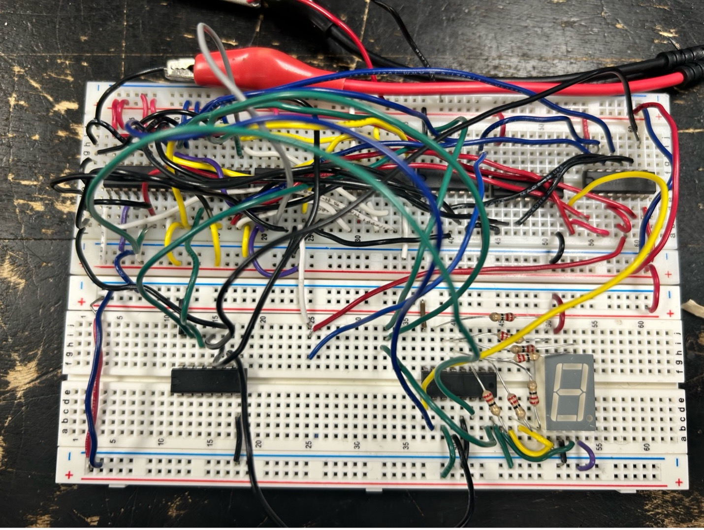
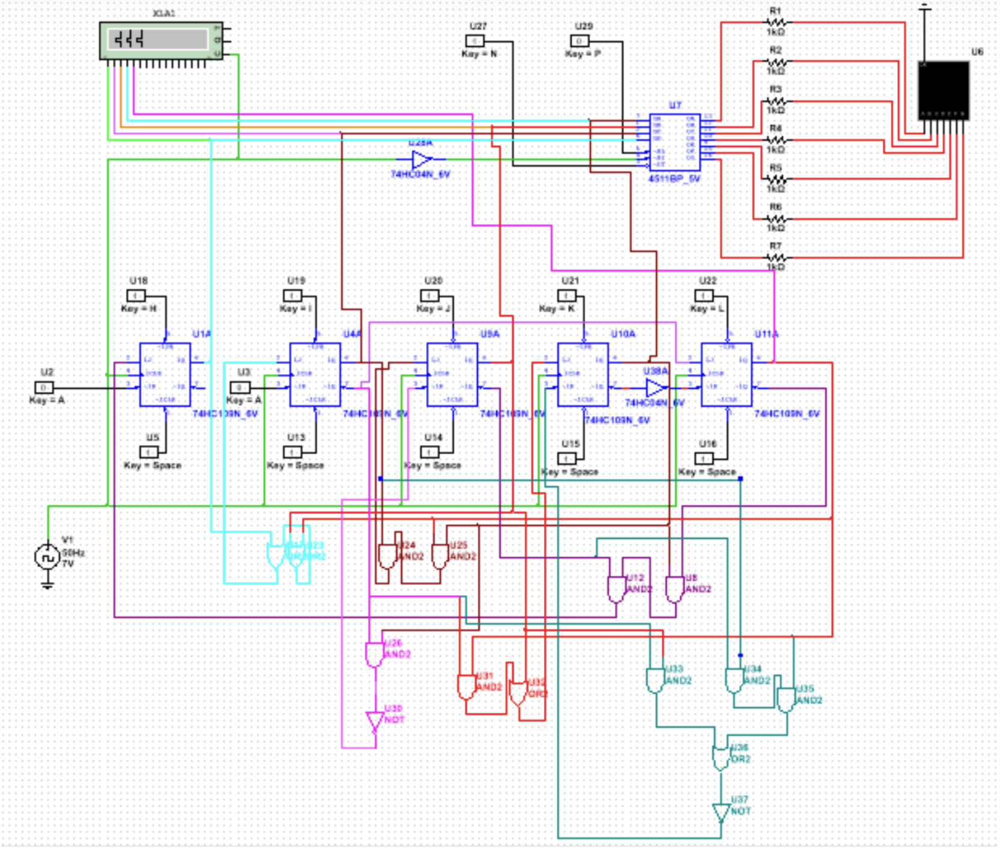

Discrete Sequential Logic Display System
Designed and debugged a sequential logic display system using JK flip-flops, control logic, and combinational gating to drive a seven-segment output. Before building the circuit physically, I mapped the design in NI Multisim so I could test the logic, validate the state transitions, and catch errors early. This helped me plan the system more confidently and reduce the risk of mistakes during construction.
What made the project especially challenging was the debugging process. I often had to stop and determine whether a fault was caused by a miswired connection or by a wire that had simply not been plugged in properly. The experience required patience and careful troubleshooting, and it reinforced how important it was to test each wire before using it to ensure it was not broken or faulty. By combining methodical planning with systematic verification, I was able to refine the design into a reliable working circuit.
Skills Used
Media
See the circuit logic and the final display system in context.

